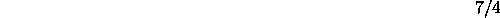
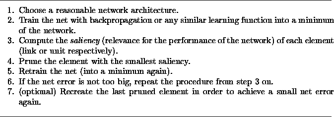

Next: Optimal Brain Surgeon
Up: Theory of the
Previous: Magnitude Based Pruning
Optimal Brain Damage (OBD) approximates the change of the error
function when pruning a certain weight. A Taylor series is used for
the approximation:

To simplify the computation, we assume that
- the net error function was driven into a minimum by training, so
that the first term on the right side of equation (
 )
can be omitted;
)
can be omitted;
- the net error function is locally quadratic, so that the last
term in the equation can be left out;
- the remaining second derivative ( Hesse-matrix) consists
only of diagonal elements, which affects the second term in equation
().
The result of all these simplifications reads as follows:

Now it is necessary to compute the diagonal elements of the
Hesse-Matrix. For the description of this and to obtain further
information read [YLC90].
Niels.Mache@informatik.uni-stuttgart.de
Tue Nov 28 10:30:44 MET 1995